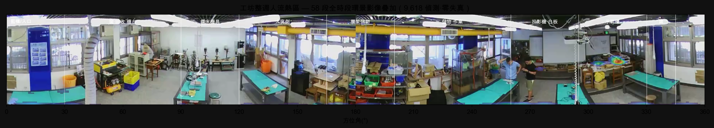
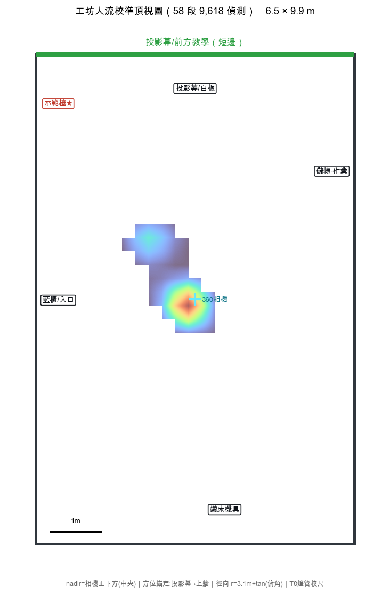

這是用你提供的安裝資訊重建的度量級頂視人流圖：天花板 360 相機正下方 = 房間中央(nadir)；方位以投影幕在上牆短邊錨定；徑向用物理模型 r = 天花板高(3.1m) ÷ tan(俯角) 還原，取代先前線性投影造成的失真。室內 6.5 × 9.9 m（T8 燈管校尺）。
熱區集中於相機與前方教學/示範區之間，與環景判讀的「前方教學區占 45%」一致（58 段全時段多片）。徑向遠近仍受魚眼解析限制，僅供概略參考。
天花板 360 相機的偵測本就是方位角 + 影像中位置，因此人流直接疊回相機自身的環景影像，零投影失真。房間分區（投影機/白板、示範檯、鑽床、窗…）由環景影像直接判讀標註。
註：天花板相機與 X5 建模是兩組不同拍攝，無共同測量基準點，故不做易失真的度量級頂視套圖；徑向遠近受魚眼解析限制僅供參考。